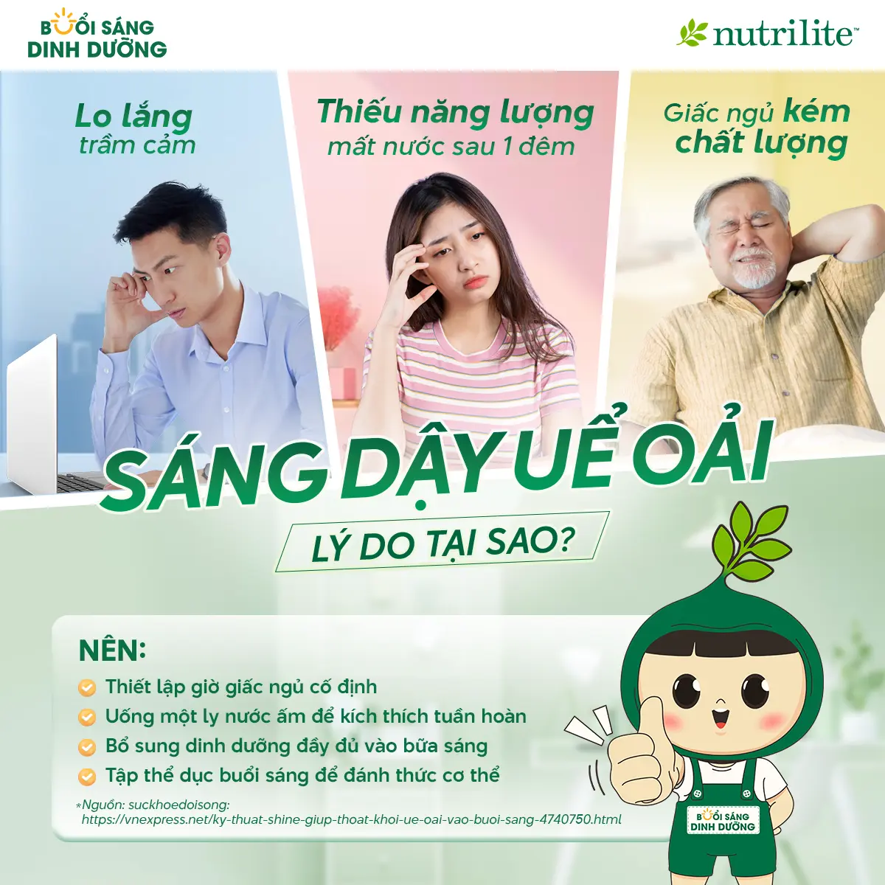

Sáng Dậy Uể Oải - Lý Do Tại Sao?
Bạn đã ngủ đủ 7-8 tiếng nhưng vẫn cảm thấy mệt mỏi, thiếu tỉnh táo vào buổi sáng?
Sự thật là: chất lượng giấc ngủ không chỉ phụ thuộc vào thời gian ngủ mà còn bị ảnh hưởng bởi nhiều yếu tố khác. Dưới đây là 3 nguyên nhân phổ biến khiến bạn ngủ đủ mà vẫn uể oải.
Nguyên nhân gây mệt mỏi dù ngủ đủ giấc
- Tâm trạng lo lắng hoặc khó chịu do cơ thể không khoẻ mạnh: Làm bạn khó chìm vào giấc ngủ sâu và dễ bị thức giấc giữa đêm.
- Ngủ không theo giờ giấc cố định: Việc thường xuyên thay đổi giờ ngủ giống như “lệch múi giờ” khiến đồng hồ sinh học bị rối loạn.
- Cơ thể thiếu năng lượng và mất nước: Sau một đêm dài, nếu không được bù đắp kịp thời sẽ dễ gây cảm giác mệt mỏi, thiếu tỉnh táo.
Giải pháp giúp bạn thức dậy tỉnh táo hơn
Hãy thử áp dụng những thói quen dưới đây để cải thiện chất lượng buổi sáng của bạn:
- ✔️ Thiết lập giờ giấc ngủ cố định, hạn chế ánh sáng xanh trước khi ngủ.
- ✔️ Uống một ly nước ấm vào buổi sáng để cấp nước và kích thích tuần hoàn.
- ✔️ Tập thể dục nhẹ nhàng để đánh thức cơ thể.
- ✔️ Bổ sung dinh dưỡng đầy đủ vào bữa sáng để cung cấp năng lượng cho não bộ và cơ thể.
Hãy duy trì những thói quen lành mạnh để bắt đầu ngày mới với năng lượng tích cực và sự tỉnh táo cần thiết!
Nguồn: